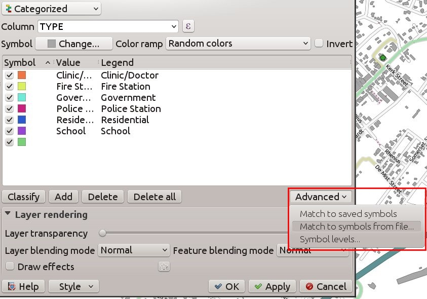
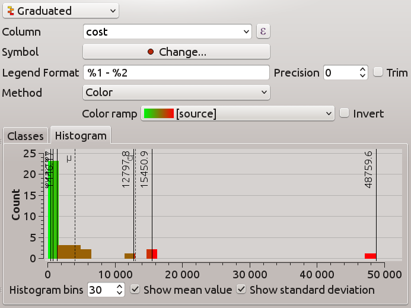

QGIS 2.10の変更履歴¶
QGIS 2.10.0 『Essen』 の変更履歴。Essen は2010年3月に行われたディベロッパーミートアップの開催都市名です。
最新リリース
これは4カ月ごとのリリースシリーズの次のリリースです。 これは、私たちが取り組んでいる新機能への早期アクセスを提供し、QGIS開発の「最先端」を表しています。 新しい機能をユーザーに展開することについてもっと慎重にしたい運用環境で作業している場合は、QGISのLTR（Long Term Release）バージョンも提供しています。 現在のLTRはバージョン2.8.2であり、 download.qgis.org から入手できます。 LTRリリースは、バックポートによるバグ修正を1年間サポートし、恒久的な機能凍結（新しい機能は追加されず、バグフィックスと簡単なアップデートのみ）になります。 QGIS 2.10 『Pisa’で提供される機能は、次のLTRリリース（2016年にリリース予定）に含まれる予定です。このリリースを使用すると、次のLTRに移行する新しい機能をテストする絶好の機会が得られます。
QGIS 2.10 『Pisa』 の新機能
QGIS 2.10.0には、最も人気のあるフリーデスクトップGISをさらに充実した機能にしてくれるように、多くの素晴らしい新機能、調整、改良が含まれています。 新しい機能がソフトウェアに追加されるたびに、新しいバグが発生する可能性があります。このリリースで問題が発生した場合は、 QGISバグトラッカー にチケットを提出してください。
謝辞
私たちは、開発者、ドキュメント作成者、テスター、そして時間と労力をボランティアしている（あるいは人々に資金を提供する）多くの人々に感謝したいと思います。
From the QGIS community we hope you enjoy this release! If you wish to donate time, money or otherwise get involved in making QGIS more awesome, please wander along to qgis.org and lend a hand!
最後に、このプロジェクトに提供した貴重な財政支援について、公式スポンサーに感謝したい。
- ゴールドスポンサー: Asia Air Survey, Japan,
- SILVER Sponsor: Sourcepole AG, Switzerland
- SILVER Sponsor: State of Vorarlberg, Austria
- SILVER Sponsor: Office of Public Works, Ireland, Ireland
- SILVER Sponsor: AGH University of Science and Technology, Krakow, Poland
- BRONZE Sponsor: www.molitec.it, Italy
- BRONZE Sponsor: www.argusoft.de, Germany
- ブロンズスポンサー: www.openrunner.com, France
- ブロンズスポンサー：GKGカッセル、ドイツ（Dr.Ing。Claas Leiner）、ドイツ<http://www.gkg-kassel.de/> `__
- BRONZE Sponsor: Customer Analytics, USA
- BRONZE Sponsor: Urbsol, Australia
- BRONZE Sponsor: MappingGIS, Spain
- BRONZE Sponsor: Lutra Consulting, UK
- BRONZE Sponsor: ADLARES GmbH, Germany
- BRONZE Sponsor: Avioportolano Italia, Italy
- BRONZE Sponsor: GeoSynergy, Australia
- BRONZE Sponsor: Gaia3D, South Korea
- BRONZE Sponsor: Royal Borough of Windsor and Maidenhead, UK
- BRONZE Sponsor: Chartwell Consultants Ltd, Canada
- BRONZE Sponsor: Trage Wegen vzw, Belgium
- BRONZE Sponsor: GIS-Support, Poland
- BRONZE Sponsor: GIS3W, italy
- BRONZE Sponsor: GFI - Gesellschaft fr Informations technologie mbH, Germany
- BRONZE Sponsor: Faculty of Geology, Geophysics and Environmental Protection, AGH, University of Science and Technology, Poland
A current list of donors who have made financial contributions large and small to the project can be seen on our donors list. If you would like to become and official project sponsor, please visit our sponsorship page for details. Sponsoring QGIS helps us to fund our six monthly developer meetings, maintain project infrastructure and fund bug fixing efforts.
QGISはフリーソフトウェアであり、使用するために何かを支払う義務はありません。実際、財務的または社会的地位にかかわらず、広範囲にわたる人々にそれを使用するよう奨励したいと考えています。すべての人類にとってより良い社会をもたらします。
一般情報¶
機能：結合パラメータを編集できるようになりました¶
結合が作成された後で、結合パラメータ（結合接頭辞または結合する列など）を編集できるようになりました。この変更に先立って、結合全体を削除して再作成する必要がありました。

機能：結合されたレイヤーをフィルタリングできるようになりました¶
バージョン2.10以前では、少なくとも1回の結合があった場合、レイヤーをフィルタリングできませんでした。今でもフィルタリングは可能ですが、元のマスター表の列のみを使用します。

機能:全般の改善¶
下記の多数の項目と同様に、以下の改善がなされました：
- PostGISのPointCloudレイヤーのサポート
- ドッキング可能なウィジェットのアイコンバーとアイコンが改善され、スクリーンの不動産を占有し、OSXの外観を改善
- GRASSプラグイン/プロバイダの改善
- 湾曲したラベル用の非ラテンスクリプトのサポート
- 大幅に改善された、より堅牢なラスタ計算機および地理参照ツール
- データ定義のラベルプロパティウィンドウのUIとワークフローの改善

機能：潜在的なプロジェクトファイルの上書き処理の改善¶
QGIS 2.10は、ロードされたプロジェクトの最終変更日が変更された場合、プロジェクトを保存しようとすると警告を表示します。これは、複数のユーザーまたはセッションが同じプロジェクトファイルを開いていて、両方がプロジェクトファイルに編集内容を保存しようとしている場合に便利です。
この機能は次の人が開発しました: Jürgen Fischer (norBIT)

機能:新しいジオメトリエンジン¶
QGIS 2.10には新しいジオメトリエンジンが搭載されています。一般的に、ユーザーインターフェイスにはまだ多くの違いはありませんが、将来的にサポートできるようになる、より豊かな地理空間機能の基盤となります。新しい実装では、カーブしたジオメトリタイプをサポートしています（たとえば、円のように分割されたポリゴンではなく、円としてトラフィックラウンドアバウトを表すことができます）。ジオメトリのz / m値のバックエンドサポートがあります。QGISで曲線を使用するには、PostGISまたは曲線のジオメトリを表現できる同様のデータストアを使用する必要があります。遊びをしたい場合は、PostGISデータベースで次のような簡単な演習を試すことができます:
-- Table: curves DROP TABLE curves;
CREATE TABLE curves (
id bigserial NOT NULL,
geometry geometry(CURVEPOLYGON, 4326),
name text,
CONSTRAINT p_key PRIMARY KEY (id)
);
INSERT INTO curves VALUES ( 1, st_geomfromtext(
'CURVEPOLYGON(CIRCULARSTRING(1 1,1 2, 2 2, 2 1, 1 1))', 4326), 'test');
こうするとレイヤ curves をあなたのプロジェクトに追加できます.
この機能は、以下によって開発されました： Marco Hugentobler（Sourcepole AG）<http://www.sourcepole.ch/> __
**この機能は、**スイスのKantonSolothurn（http://www.sogis.ch/）によって資金提供されました。__

解析ツール¶
機能：新しい統計要約ドックウィジェット¶
ベクターレイヤーまたは選択からのフィールドまたは式の要約統計量（平均値、標準偏差など）を表示できます。これは ビュー -> パネル -> 統計 メニューから起動できる新しいドックパネルによって提供されます。作成できるのは 数値の列 を持つ ベクターレイヤー の統計だけであることに注意してください。

機能：ラスター計算機で対数関数を使用する¶
ラスター計算機（QGISメニューの ラスター -> ラスター計算機 ）は、1つまたは複数のラスターレイヤーで行列演算を実行できるツールです。QGIS 2.10では、ラスター計算機で LN と LOG10 を使うことができます。

機能：新しいゾーン統計機能¶
領域統計は、ポリゴンの基礎となるピクセルの集約値を抽出する方法を提供します。ゾーン統計ツールには、次の新機能が追加されました。
- 計算する統計を選択できるようになりました
- 余計な統計情報が追加されています（中央値、標準値、最小値、最大値、範囲値、少数値、
- 統計抽出に使用するラスタバンドを選択する機能
ゾーン統計は 『コアプラグイン』（QGISインストーラに同梱されているプラグイン）ですが、デフォルトでは無効になっています。プラグインマネージャでそれを有効にする必要があります。そして、 `` Raster``メニューにゾーン統計のメニューエントリが現れます。

ブラウザ¶
機能:新しいブラウザプロパティウィジェット¶
QGISブラウザドックパネル（ `` View-> Panels-> Browser``）を使うと、ファイルシステムツリーの一番下にプロパティウィジェットを有効にすることができます。クリックするデータソースのプロパティは、このパネルに表示されます。これにより、選択したデータセットに関する基本情報をすばやく簡単に表示できます。プロパティビューを切り替えるには、ブラウザパネルの上部にある `` i``アイコンを使うべきです。
Feature: New browser icon¶
QGISブラウザは、ファイルシステム、データベース接続、Webサービス接続などから利用可能なGISデータセットをブラウズして表示するための独立したスタンドアロンアプリケーションです。以前のリリースのQGISでは、多くのユーザーにとって混乱の原因となっていたQGISアプリケーション自体。間違ったアプリケーションを開く可能性を減らすために、QGISブラウザ用の新しいアイコンを作成しました。

データプロバイダ¶
機能：DXFエクスポートの改善¶
最後の3つのQGISバージョンでは、DXFエクスポートが継続的に改善されました。 このバージョンでは、改良されたSVGやDXFブロック変換の簡単なマーカーが導入され、不完全な（判読不能な）DXFファイルとなるいくつかのバグや問題が修正されています。 スクリーンショットでは、左側のQGISの元のビューと、右側のAutodesk TrueViewでエクスポートされたDXFファイルのレンダリングを見ることができます。
この記事qgis.ch は、サポートされるものとされないものについて説明しています。
この機能は次の人が開発しました: Jürgen Fischer (norBIT)
この機能は、以下によって資金提供されました： Morges、Uster、VeveyおよびSIGEのコミュニティ

Feature: PostGIS provider side expression filters¶
QGIS 2.10では、データベースサーバー側の機能をフィルタリングできるようになりました。サポートされている式のみがデータベースに送信されます。サポートされていない演算子や関数を使用した式は、ローカル評価に正常にフォールバックします。
この機能を利用するには、 設定 -> オプション -> データソース で有効にする必要があります。フィルタ式がPostgreSQL準拠の場合、自動的にサーバ側で実行されます。これらの呼び出しを使用する場合など、Python APIを使用する場合にもこの機能を使用することができます。
QgsFeatureRequest().setFilterExpression( expression )
または
QgsVectorLayer::getFeatures( expression )

データマネジメント¶
機能:バーチャルフィールドが現在は更新可能です¶
バージョン2.8より前のバージョンでは、仮想フィールドの計算式を変更したい場合は、仮想フィールドを削除して再作成する必要がありました。2.10では、 `` Fields``タブに行き、小さな `` Expression``ボタンを押して式エディタを開き、仮想フィールドに使用されている式を更新することができます。
この機能は、以下によって開発されました： Matthias Kuhn（OpenGIS）<http://www.opengis.ch/> __
この機能は、以下によって資金提供されました： Uster市、スイス<http://gis.uster.ch/> __

機能：ValueRelation編集ウィジェットの自動補完機能付きライン編集¶
地物フォーム上に作成した入力ボックスで入力を開始すると、ベクターレイヤーの値関係編集ウィジェット（ レイヤー - >プロパティ - >フィールド - >ウィジェットの編集 - >値関係 ）をオートコンプリートに設定できるようになりました。

機能:DBマネージャの改良¶
DBマネージャには２つの新しい機能があります:
レイヤーとしてのクエリはもはやユニークな整数列を必要としません
一意の整数列を持つ列は、SQLクエリをQGISレイヤーとしてロードするためには必要ありません。自動的にインクリメントされた値が使用されます。
** SQLクエリービルダーの統合**
DB Managerの新しいウィンドウは、テーブル名、カラム名、関数をユーザが選択できるウィジェットを使用してSQLクエリを作成するのに役立ちます。これはQSpatialiteプラグインから移植され、PostGISおよびSpatialiteプロバイダで動作します。
** これらの機能は次の方の資金提供で作成されました **: MEDDE (French Ministry of Sustainable Development)
** これらの機能は次の方によって開発されました **: Hugo Mercier / Oslandia

機能：リレーション参照ウィジェットのフィルタ連鎖¶
他の表からリンクされた項目を選択するには、関係参照ウィジェットを使用できます。リンクされた地物にジオメトリが添付されているか、リンクされたIDでエレメントを選択している場合は、地図で地物を選択することによって、エレメントをグラフィカルに選択できます。非空間選択を容易にするために、フィルタ（連鎖または非連鎖）で利用可能なオプションを絞り込むことが可能になりました。フィルタがチェーンされていない場合、選択肢は「AND」と組み合わせて使用可能なオプションを定義します。連鎖がチェックされている場合、フィルタのドリルダウンモードがアクティブになり、各フィルタは前のフィルタに対応するエントリのみを表示します。これはCity - > Street - > Numberのような階層的なデータから選択するのに便利です。
この機能は、以下によって開発されました： Matthias Kuhn（OpenGIS）<http://www.opengis.ch/> __
** この機能は次の方の資金提供で開発されました:** SIGE

ダイアグラム¶
機能:ダイアグラムの改善¶
QGISのダイアグラム機能により、小さな円グラフやヒストグラムを地図上の地物に重ね合わせできます。今回のリリースでは、ダイアグラムのサポートが次のように改善されました。
- ダイアグラムは設定を失うことなく無効にすることができます
- チェックボックスを追加すると、常にレイヤーの図が表示されます
- ダイアグラムのユーザーインターフェイスが更新され、ダイアログが簡素化され、ユーザーフレンドリーになりました
- 図のクラスがレイヤの凡例に表示されるようになりました

デジタイジング¶
機能：ジオメトリ回転ツールの改良¶
ジオメトリ回転ツールは、地物のジオメトリを任意に回転させる高度なデジタイジングツールです。回転ツールの改良点は次のとおりです。
- 回転マップツールで数値入力を使用できるようになりました
- 角度の設定にコンボボックスを利用できます
- 角度に対するスナッピングがサポートされました ( shift + click`` を
利用すると直接利用可能です) - 回転のアンカーは
CTRL+clickで指定します,マウスの動きでは指定できません

ラベリング¶
機能: マルチラインラベル用の 「ポイントの周り」 配置オプション¶
このモードに設定すると、ラベルのテキストの配置は、ポイントに対するラベルの最終的な配置に依存します。たとえば、ラベルがポイントの左に配置されている場合はラベルは右揃えになり、ポイントの右に配置されている場合はラベルが左揃えになります。これにより、ポイントレイヤの複数ラベルの外観が大幅に改善されます。

マップコンポーザ¶
特長：スケールバーのサイズを希望のスケールバーの幅に合わせる¶
以前のQGISversionsでは、潜在的なスケールの範囲が大きかった場合、グラフィカルなスケールバーを使用することは困難でした。スケールバーは、すばやすぎるか狭すぎるかのいずれかであり、スケール変更後にセグメントサイズ（セグメントあたりの単位）を手動で適応させなければならなかった。また、グラフィカルなスケールバーは、Atlasのシリアル印刷や最終的な地図のスケールが不明なときにQGISserverで実際に使用することはできませんでした。QGIS2.10を使用すると、mm単位で1セグメント長の最小/最大サイズを設定できるようになり、QGISは丸め値を維持しながらセグメントごとに自動的に単位を適合させることになります。
スケールバーのアラインメントも設定することを忘れないでください。あなたはそれが中央に置かれているか、右寄せであることを望むならば！
この機能は、以下によって開発されました： Sandro Mani（Sourcepole AG）<http://www.sourcepole.ch/> __
この機能は以下によって資金提供されました： Kanton Glarus、Switzerland <http://geo.gl.ch/> `__

プログラマビリティ¶
特集：プログラマーのための改善¶
私たちは、開発者にとって興味深いいくつかの変更と改善を行いました。
- Qt4の最小要件をバージョン4.8に引き上げました。Qt4は、QGISを作成するために使用する主要なC ++ツールキット/ライブラリの1つです。
- 数値のリストから統計を計算する新しい `` QgsStatisticalSummary``クラスです。
- ベクタレイヤのデータソース変更が許可されます.
- 暗黙的なクラスの共用 :
QgsField,QgsFields,QgsDataDefined,QgsFeature,QgsGeometry. - プラグインは、 `` QgsDataItemProvider``と `` QgsDataItemProviderRegistry``という2つの新しいクラスを持つブラウザウィジェットに独自のエントリを作成できるようになりました。

QGISサーバ¶
機能：WMS GetFeatureInfo要求の許容量パラメータのサポート¶
QGIS Serverが提供するWMSレイヤーを使用する場合、クリック起点のGetFeatureInfo要求がどのくらい離れているかを考慮する必要があります。これは、機能を正確に指すことが難しいモバイルデバイスにとっては重要です。この新機能が登場する以前は、QGISサーバーを搭載したモバイルデバイス上のポイントまたはラインの機能を特定することは事実上不可能でした。GetFeatureInfoリクエストに次のパラメータを追加できます。
FI_POINT_TOLERANCE=16&FI_LINE_TOLERANCE=8&FI_POLYGON_TOLERANCE=4
必要に応じて許容値（ピクセル単位）を変更します。
この機能は、以下によって開発されました： Marco Hugentobler（Sourcepole AG）<http://www.sourcepole.ch/> __
この機能は、以下によって資金提供されました： Uster市、スイス<http://gis.uster.ch/> __

シンボロジー¶
機能:既存スタイルを使ったカテゴリマッチ¶
分類されたレンダラーの詳細メニューのオプションを追加して、スタイルライブラリまたはXMLスタイルファイルの名前と一致するシンボルにカテゴリを設定します。

機能：段階的レンダラーを使用してシンボルサイズを変更する¶
レンダラーはQGISのサブシステムであり、データの豊富な地図表現を作成することができます。段階的レンダラーは、ベクターレイヤーの連続的に変化する値に基づいてシンボルを変化させる。QGISの以前のバージョンでは、色を変えることしかできませんでした（たとえば、カラーランプに沿って色を使用するなど）。QGIS 2.10では、目盛り付きのシンボルレンダラーでサイズ または 色を変更できるようになりました。ポイントレイヤーではポイントサイズを変えることができます。ラインではライン幅を変えることができます。ポリゴンレイヤーは色によって変化する能力しか保持しませんが、線幅はまだサポートされていません。
この機能は、以下によって開発されました： Vincent Mora（Oslandia）<http://www.oslandia.com/> __
この機能は以下によって資金提供されました： Agence de l’eau Adour-Garonne <http://www.eau-adour-garonne.fr/> __

機能：地物を地図範囲に自動的にクリッピングさせないための新しいオプション¶
このオプション（シンボルの詳細メニューの下にあります）は、線/ポリゴンのキャンバス範囲への自動クリッピングを無効にします。場合によっては、このクリッピングが好ましくない記号（例えば、重心が常に実際の特徴の重心でなければならない重心を満たす）をもたらす。

機能：詳細メニューからサイズのスケールと回転が削除されました¶
`` Layer - > Properties - > Symbologyタブ - > Advanced Menu``から `` SizeScale``と `` Rotation``を削除しました。式またはフィールドを使用して、*シンボルレイヤー単位*で回転を設定する必要があります。古いプロジェクトで使用された式は、シンボルレベルの**データ定義のサイズと角度**のプロパティに変換されます。
この機能は、以下によって開発されました： Vincent Mora（Oslandia）<http://www.oslandia.com/> __
この機能は以下によって資金提供されました： Agence de l’eau Adour-Garonne <http://www.eau-adour-garonne.fr/> __


機能：ヒストグラムを使用して目盛レンダラーを視覚化して変更する¶
段階的レンダラーに新しいヒストグラムタブが追加され、割り当てられたフィールドまたは式からの値のインタラクティブなヒストグラムが表示されます。クラス区切りは、ヒストグラムを使用して移動または追加することができます。
** この機能は次の方の資金提供で作成されました ** ADUGA
** この機能は次の方によって開発されました:** Nyall Dawson

機能：記号音量レベルでのサイズ、回転、ストローク幅の表現¶
サイズと回転は、マーカーを構成するすべてのシンボルレベルの式で定義できます。幅は、行を構成するすべてのシンボルの式で定義できます。
シンボルの場合、さまざまなサイズの凡例が生成されます。これにより、分類/卒業した色の場合の多変量解析の凡例が可能になります。
アシスタント（プレビュー付）は、データ定義ボタンからアクセスして、ユーザーがサイズ表記を定義できるようにします。Flannery、Area、およびRadiusの3つの方法があります。
この機能は、以下によって開発されました： Vincent Mora（Oslandia）<http://www.oslandia.com/> __
この機能は以下によって資金提供されました： Agence de l’eau Adour-Garonne <http://www.eau-adour-garonne.fr/> __

Feature：レイヤーとシンボルレイヤーのライブレイヤーエフェクト¶
ライブレイヤエフェクトは、レンダリングチェーンにさまざまなレンダーエフェクトを追加する機能を追加することで、QGISの広範な地図作成機能を追加します。ライブエフェクトを使用すると、シンボルの下に影を落としたり、レンダリングされたシンボルを斜めにしたりせん断したりすることができます。また、エフェクトをプログレッシブ（つまりレンダリングされた状態に適用する）か離散（ソースジオメトリをレンダリングチェーンに再注入するか）を設定することもできます。
**注**これは上級者向けの機能です。この機能を過剰に使用するとレンダリング時間が大幅に遅くなることがあるので、レイヤーごとに異なるシンボルプロファイルを使用することを検討してください。 1つはドラフトモードです。
** この機能は次の方によって開発されました:** Nyall Dawson
この機能は、資金提供を受けていました： `群集資金調達イニシアティブ<https://www.kickstarter.com/projects/41633306/a-christmas-gift-for-qgis-live-layer-effects-for-q > `__